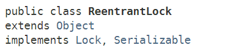
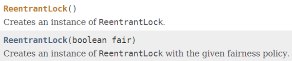

ReentrantLock类，实现了Lock接口，是一种可重入的独占锁，它具有与使用 synchronized 相同的一些基本行为和语义，但功能更强大。ReentrantLock内部通过内部类实现了AQS框架(AbstractQueuedSynchronizer)的API来实现独占锁的功能。
ReentrantLock类直接实现了Lock接口：

ReentrantLock类提供了两类构造器：

ReentrantLock类的其中一个构造器提供了指定公平策略 / 非公平策略的功能，默认为非公平策略。
公平策略：在多个线程争用锁的情况下，公平策略倾向于将访问权授予等待时间最长的线程。也就是说，相当于有一个线程等待队列，先进入等待队列的线程后续会先获得锁，这样按照“先来后到”的原则，对于每一个等待线程都是公平的。
非公平策略：在多个线程争用锁的情况下，能够最终获得锁的线程是随机的（由底层OS调度）。
注意：一般情况下，使用公平策略的程序在多线程访问时，总体吞吐量（即速度很慢，常常极其慢）比较低，因为此时在线程调度上面的开销比较大。
举个例子：
假设采用公平策略，线程A首先获取了锁，线程B和线程C等待获取锁，如下图：
当线程A释放锁时，线程B将经历从 挂起->唤醒 的线程调度过程，线程调度非常耗时。
在线程B的 挂起->唤醒 阶段：
因此，当线程持有锁的时间相对较长或者线程请求锁的平均时间间隔较长时，可以考虑使用公平策略。此时线程调度产生的耗时间隔影响会较小。
ReentrantLock的典型调用方式如下：
class X {
private final ReentrantLock lock = new ReentrantLock();
// ...
public void m() {
lock.lock(); // block until condition holds
try {
// ... method body
} finally {
lock.unlock();
}
}
}
ReentrantLock的源码非常简单，它通过内部类实现了AQS框架，Lock接口的实现仅仅是对AQS的api的简单封装。
参见AQS原理：Java多线程进阶（七）—— juc-locks锁框架：AQS独占功能剖析(2)